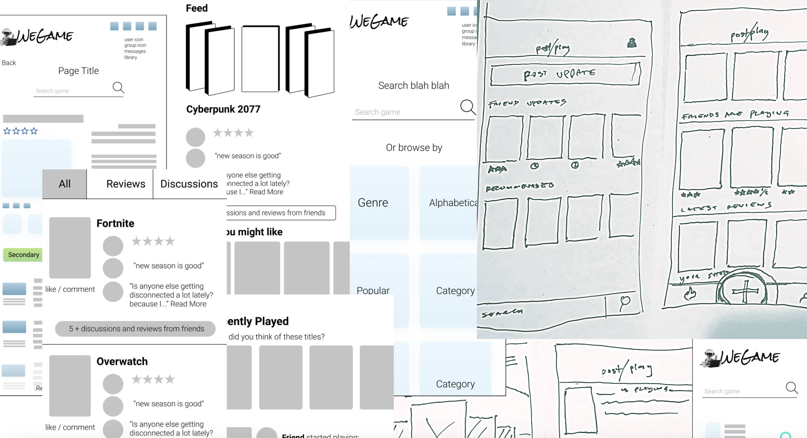
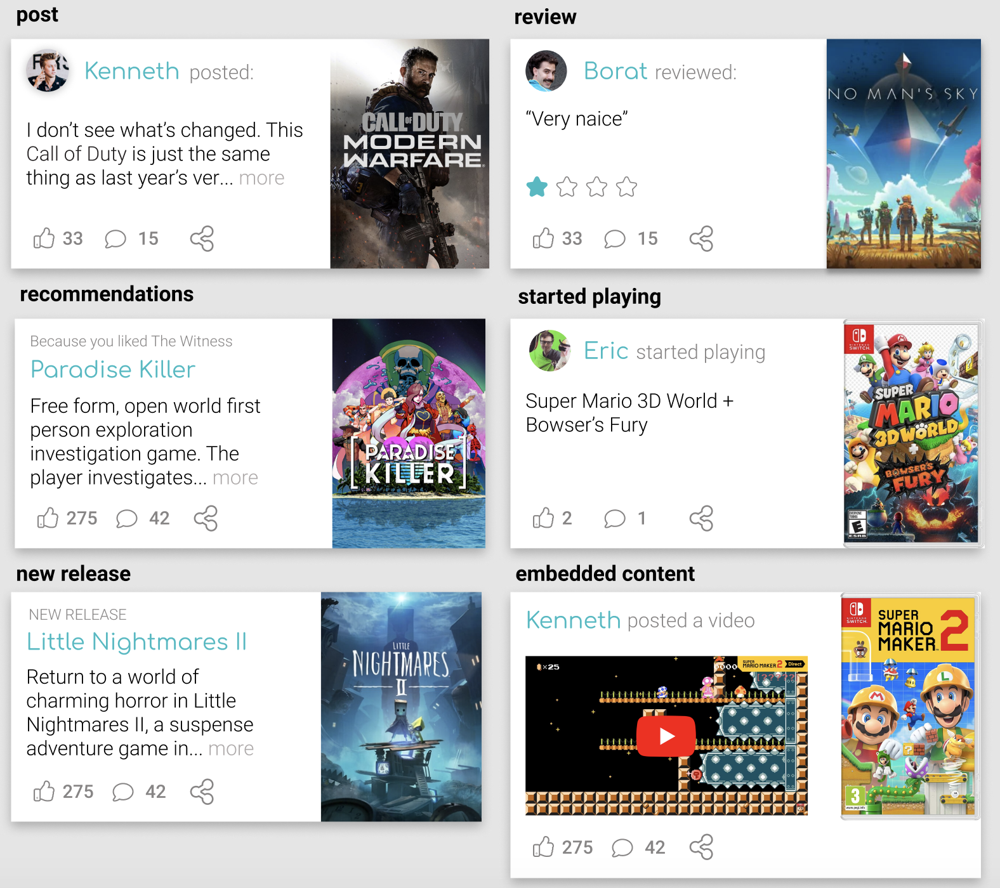
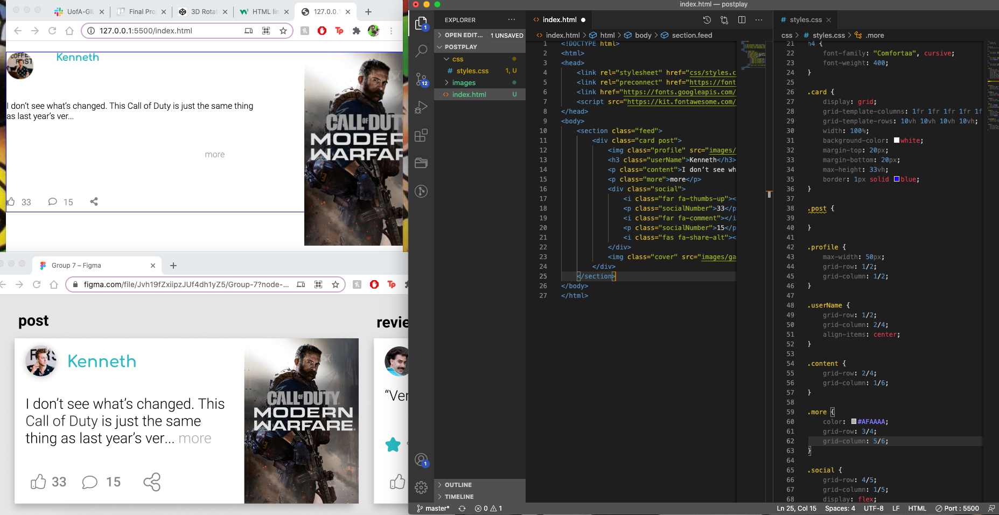
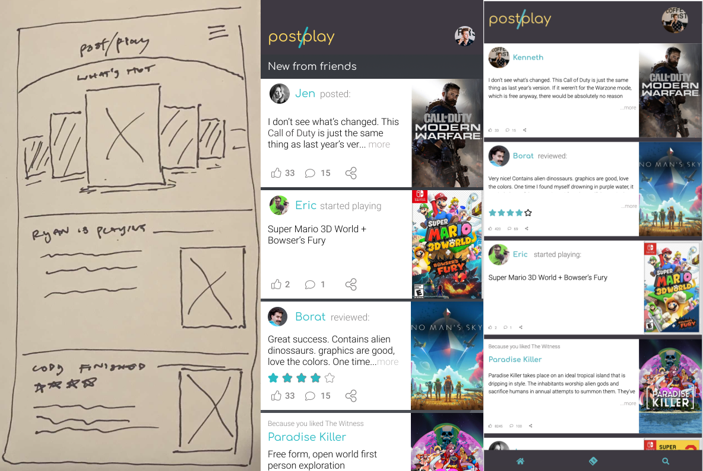

ERIC
SMITH
PORTFOLIO
Post/Play
App Concept Design
- Timeline: Two weeks
- Team: Eric Smith, Talia Buckbinder, Ricardo Moirera
- Tools: Miro, Figma, Visual Studio Code
Overview:
While working on Post/Play, we often referred to the basic idea as “Goodreads for games”, which guided our design from ideation through execution. And that’s exactly what it is: a social platform with the narrow focus of reviewing and discussing a specific type of media.
UX Process:
With several interviews and a survey conducted, our original hypothesis was reinforced: avid video game players mostly rely on their friend groups for news and recommendations. One of the primary reasons given was a belief that the online “gamer community” is generally toxic and should be avoided. Keeping this in mind, we worked on gearing the experience toward more self-curated groups in order to both highlight the opinions that actually matter to the user and keep out a negative element. To my mind, this was one of those beautiful design solutions that would normally provoke the use of an idiom that promotes violence against birds.
UI Design:
There was a brief flirtation with a design that would alternate the cover art between the right and left side of the card, but ultimately I was able to convince the team away from that unmotivated change in favor of a more consistent layout. This was only one of our many iterations to the design as we slowly figured out how best to approach the idea. In the end, the tried and true methods of user testing, incremental changes, and team brainstorming are what got us to the finish line with a product we could be proud of.
Development:
Since card design is the essential element in our layout, that was what I focused on developing first. Taking care to adhere as closely to our design as possible, I decided to utilize the robust control and flexibility offered by CSS Grid. Its unique responsive capabilities made out the perfect choice to develop our design.
Conclusion:
Personally I enjoyed this project and found a lot of potential in it. In the future I plan to return to this idea and take it from a case study on my portfolio to a full-fledged product. With more time to flesh out the user flows and information architecture I think Post/Play could hit with its intended audience.
POST/PLAY
TOOLS